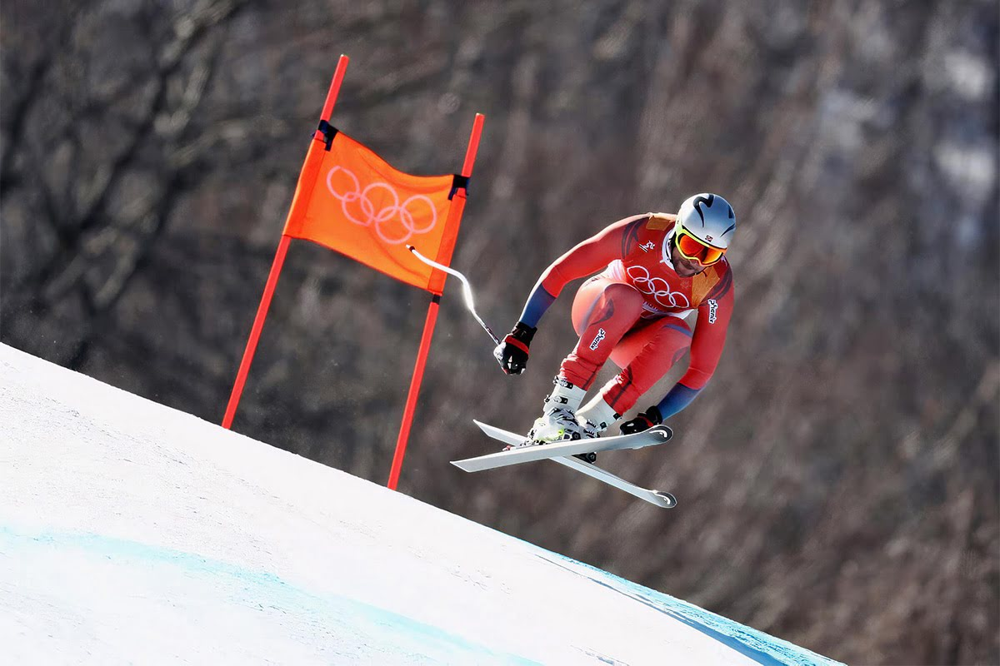
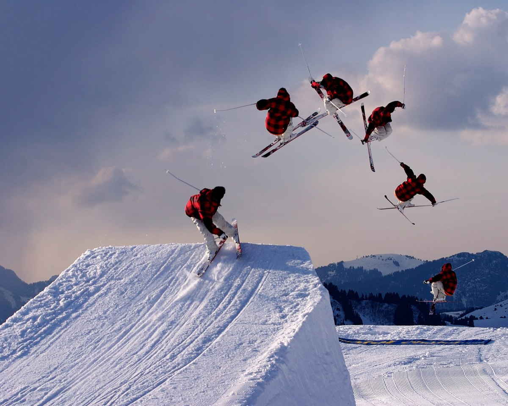
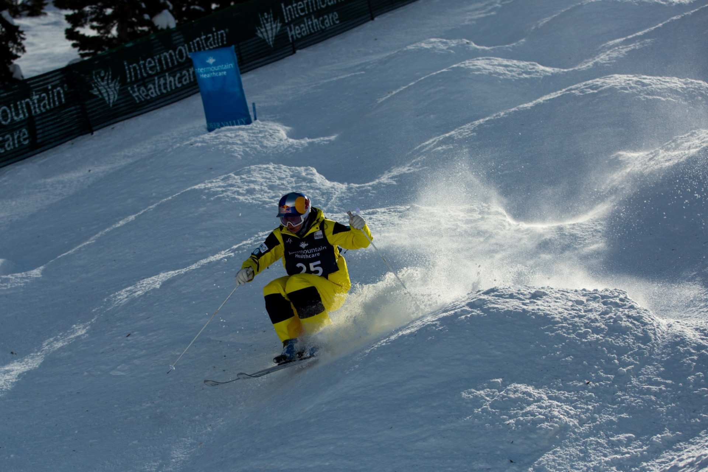
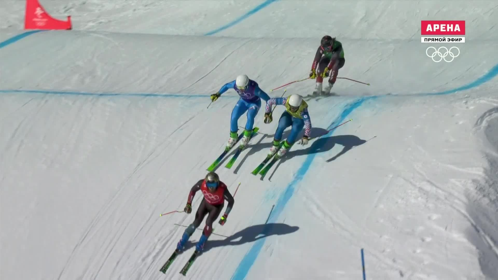
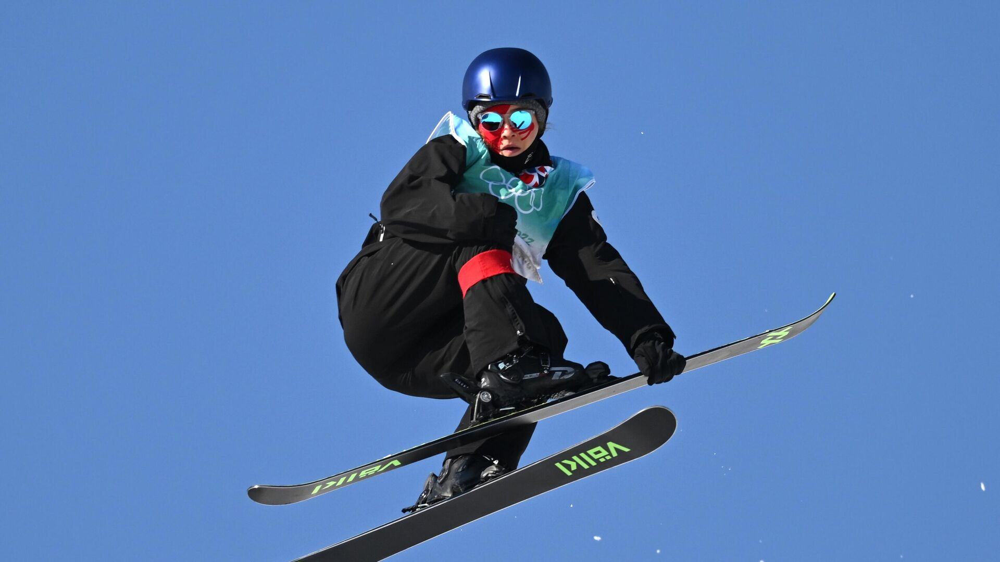
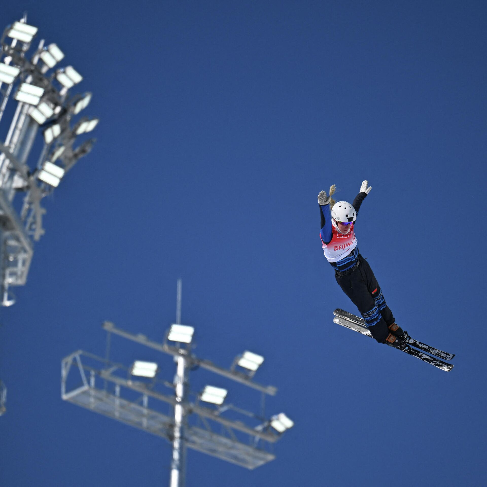

Каждый сезон соревнования по горнолыжному спорту расширяют охват аудитории. У фанатов появляется больше возможностей для просмотра онлайн-трансляций в открытом доступе, а особо важные этапы Кубка мира и чемпионаты сопровождаются репортажами на телевидении с комментариями известного советского спортсмена и тренера Владимира Михайловича Андреева.
Любители горнолыжного отдыха, далёкие от спорта, также не всегда могут оставаться в стороне, так как продавцы в магазинах, сотрудники прокатов, эксперты форумов и соцсетей «ругаются» непонятными словами из области профессиональной терминологии.
Чаще всего можно столкнуться с названиями спортивных дисциплин, которыми можно, например, наглядно описать характер какой-либо модели лыж.
Давайте посмотрим, что скрывается за данными названиями, на чём выступают спортсмены на Кубке мира и какие альтернативы профессиональным снарядам смогут порадовать широкий круг любителей.

Каждый сезон соревнования по горнолыжному спорту расширяют охват аудитории. У фанатов появляется больше возможностей для просмотра онлайн-трансляций в открытом доступе, а особо важные этапы Кубка мира и чемпионаты сопровождаются репортажами на телевидении с комментариями известного советского спортсмена и тренера Владимира Михайловича Андреева.
Слалом — одна из самых популярных дисциплин в наших широтах. Соревнования по слалому можно проводить даже на коротких склонах, так как расстояния между флагами не превышают 15 метров.
Чтобы пройти через все ворота слаломной трассы, нужно совершить большое количество поворотов малого радиуса. А чтобы сделать это, необходимо проложить самую короткую траекторию максимально близко к флагу. Спортсмены используют так называемую перекрёстную блокировку, представляющую собой атаку флага голенью и защитой выставленной вперёд палки, срезая тем самым угол и укорачивая путь.
На фото Александр Хорошилов — победитель этапа Кубка мира в слаломе в 2015 году
Короткие повороты — короткие лыжи. По правилам ФИС длина слаломных лыж ограничена минимальной отметкой 165 см для мужчин и 155 см для женщин. Практически все мужчины, вне зависимости от роста и веса, используют лыжи длиной 165 см с радиусом бокового выреза 12,5-13 метров. У женщин, в зависимости от уровня соревнований, трассы и индивидуальных предпочтений, возможен разброс 155-158 см с радиусом 11,5-12,7 метра.
«Цеховые» слаломные лыжи используются достаточно широко. Спортсмены, тренеры и инструкторы выбирают их не только для соревнований, но часто и для повседневной работы. Также есть продвинутые любители, предпочитающие «спортцех» для совершенствования своей техники и катания на коротких склонах.
Гигант — быстрый, техничный, динамичный, доступный. Многие юные горнолыжники начинают своё знакомство со спортом и трассами именно с гигантского слалома. Короткие пологие трассы с относительно большим расстоянием между воротами позволяют начинающим спортсменам сделать свои первые шаги на пути к чемпионству.
А у взрослых — наоборот: всё жёстко и серьёзно, перепад высот 300 метров и более, обычно не менее 40 поворотов, которые необходимо отработать максимально технично и эффективно, так как малейшая ошибка может пронести мимо следующего флага и повлечь за собой дисквалификацию.
На фото Марсель Хиршер — олимпийский чемпион и чемпион мира в гиганте
Согласно современным требованиям FIS для Кубка мира, мужские лыжи для гигантского слалома имеют минимальную длину 193 см и радиус бокового выреза 30 метров. Женские модели — 188 см с таким же радиусом.
Лыжи для гиганта также есть в свободной продаже и используются широким кругом спортсменов разного уровня.
Здесь же мы разберёмся с лыжами категории «мастерс» и коммерческими версиями.
«Мастерс» — это «вторая лига», тут выступают ветераны, бывшие профессиональные спортсмены и продвинутые любители.
Требования в таких соревнованиях менее жёсткие. Трассы часто ставят короче, поэтому и лыжи допускаются с меньшими радиусами (23-27 м) и ростовками (183-191 см).
Тем не менее данные модели собираются и производятся так же, как и лыжи стандартов FIS.
А вот так называемые коммерческие модели — это уже немного другая история. Такое название эти лыжи получили из-за распространённости и доступности, а также потому, что они производятся на конвейерах в больших количествах. По факту это экспертные модели для катания по трассам, характером и поведением напоминающие спортивные.
Ростовки и радиусы тут отличаются достаточно сильно. Длину лыж выбирают в зависимости от уровня мастерства и поставленных целей. Например, многие продвинутые лыжники используют для катания в горах подобные модели длиной 175-185 см с радиусом бокового выреза 17-20 метров.
Super G — самая молодая горнолыжная дисциплина, первые старты которой состоялись на Олимпиаде 1988 года в канадском Калгари.
Скорость, перепад высот и расстояние между воротами здесь больше, чем в слаломе-гиганте, хотя и меньше, чем в скоростном спуске. Зато и ворота расставлены гораздо чаще и с меньшими интервалами, поэтому выполнить чистый поворот становится сложнее, а скорости достигают 120-130 км/ч. Настоящим украшением этой дисциплины являются зрелищные прыжки на высоких скоростях при резких перепадах рельефа.
На фото Кьетиль Янсруд — олимпийский чемпион в дисциплине SG
Лыжи для супергиганта используются покороче (по сравнению со скоростным спуском) — минимально 210 см у мужчин и 205 см у женщин, а радиус бокового выреза составляет 45 и 40 метров соответственно.
Конечно, подобные требования применяются только на мировых соревнованиях и только для взрослых. Для любителей, ветеранов или юниоров и трассы проще, и лыжи короче.
Например, чтобы принять участие в соревнованиях категории «мастерс», достаточно иметь лыжи длиной более 185 см.
Лыжи для данной дисциплины трудно обнаружить в магазинах, так как используют их только профессиональные спортсмены.
Самая зрелищная дисциплина горнолыжного спорта — даунхилл, он же скоростной спуск. Трассы используются очень длинные, перепад высот между стартом и финишем — максимальный, а расстояние между воротами обычно превышает 50 метров. Скорости около 140 км/ч и прыжки по 40 метров и более — норма для этого вида спорта.
На фото Аксель Лунд Свиндаль — олимпийский чемпион и чемпион мира в скоростном спуске
Для контроля на таких скоростях необходимы длинные «рельсы» под ногами. Лыжи для скоростного спуска по правилам FIS имеют минимальные ростовки 210 см у женщин и 218 см (!) у мужчин, минимальный радиус бокового выреза — 50 метров. Конечно, это снаряды для спортсменов высокого уровня, поэтому подобные лыжи очень сложно встретить на прилавках магазинов.
Соревнования в комбинации позволяют выявить наиболее универсального горнолыжника, который может успешно выступать в совершенно разных дисциплинах.
Раньше в «классической» комбинации проводили две попытки слалома и одну скоростного спуска или супергиганта. А однодневные соревнования, включающие по одному старту скоростного спуска и слалома, называли суперкомбинацией.
На фото Павел Трихичев — призёр этапа Кубка мира в комбинации
Сейчас «классические» соревнования не проводятся, а суперкомбинация называется просто комбинацией и выглядит следующим образом: в первом заезде все заявленные спортсмены стартуют на трассе скоростного спуска, ко второму заезду — слалому — допускаются только 30 лучших по итогам первой попытки спортсменов, стартующих в обратном порядке.
То есть соревнования завершаются проездом лидера, а итоги подводятся по сумме этих двух заездов.
Параллельные дисциплины всегда собирают огромное количество зрителей, так как спортсмены стартуют одновременно в парах, что сразу и наглядно определяет победителя. Параллельные соревнования проводятся в слаломе и гиганте. Заезды проходят в несколько стадий по системе «на вылет».
Сборные команды состоят из двух мужчин и двух женщин каждая.
Фото с этапа Кубка мира в Москве (параллельный слалом), 2013 год
Спортивные лыжи, так называемый спортцех, предназначены для тренировок и соревнований в конкретной дисциплине. Такие модели изготавливаются на заводе в отдельном цехе, где используется особое оборудование, работают мастера по производству именно спортивных лыж, а каждая пара тщательно контролируется и промеряется по многим параметрам.
Зачем это всё надо? Всё просто. Для участия в соревнованиях высокого уровня к лыжам предъявляются жёсткие требования и стандарты Международной федерации лыжного спорта, описанные выше. Это сделано для того, чтобы все спортсмены были в одинаковых условиях.
Такие стандарты избыточны для обычного лыжника, но тем не менее спортивные модели очень популярны в силу их высокого технического совершенства. Однако при их выборе следует трезво оценивать свой уровень и условия катания на обычных горнолыжных трассах. Для отдыха на курортах, например, они не рекомендуются, так как узкая талия лыж очень требовательна к характеру склона, а высокая продольная и торсионная жёсткость — к технике.
Лыжи категории «мастерс» подойдут для ветеранских соревнований и очень продвинутых любителей. Требования к таким моделям всё ещё серьёзные, но чуть менее жёсткие. Часто они имеют меньшие длину и радиус, но по конструкции и материалам это полноценный «спортцех» со всеми вытекающими. Поэтому они также мало подходят для свободного катания на курортах.
А вот так называемые гражданские, или коммерческие модели, которые часто делают в таком же спортивном дизайне, отличаются от первых двух категорий очень сильно. Они не рассчитаны на сверхвысокие скорости и нагрузки, зато менее требовательны к технике спуска. В отличие от «спортцеха» здесь менее агрессивная геометрия и не столь жёсткая начинка, но в своём стиле и характере такие модели всё ещё несут черты определённых спортивных дисциплин. Эти лыжи созданы именно для свободного катания в своё удовольствие.
Гражданские модели, вдохновлённые гигантским слаломом, отлично подойдут хорошо катающимся лыжникам для скорости и подготовленных склонов.
Короткорадиусные лыжи со слаломной геометрией будут идеальным инструментом совершенствования техники катания, а также отлично подойдут для фан-карвинга на коротких городских склонах.
Фристайл считается очень молодым видом спорта, его история началась с лыжного балета в 1950-х годах. Он представлял собой горное шоу на лыжах, которое было предназначено для развлечения отдыхающей публики, ну и одновременного извлечения доходов.
Лыжная акробатика предусматривает выполнение спортсменами максимально сложных акробатических прыжков со специального трамплина. 
Склон для лыжной акробатики состоит из горы разгона, фристайл платформы с несколькими различными по размеру трамплинами и крутого склона для приземления.
Прыжки участников оцениваются по следующей системе:
Cпуск на горных лыжах по бугристому склону, а также выполнение прыжков на трамплинах. На трассе, как правило, присутствует два трамплина.
Юлия Галышева на этапе Кубка мира по фристайлу-могул
Выступление оценивается по следующим критериям: техника поворотов, сложность прыжков и качество их исполнения, а также время спуска.
Гонка на лыжах по специально подготовленной трассе. Проходя дистанцию, спортсмены должны справляться с различными препятствиями в виде различных трамплинов и крутых виражей.
Олимпиада в Пекине 2022
Соревнования по ски-кроссу делятся на два этапа: квалификация и финалы. На первом этапе спортсмены проходят трассу по одному и на время. В финальных заездах принимает участие по 4 спортсмена. Побеждает в лыжном кроссе тот, кто приходит к финишу первым.
Слоупстайл (англ. slopestyle) – дисциплина лыжного фристайла, которая заключается в выполнении спортсменами серии акробатических прыжков на трамплинах, пирамидах, контр-уклонах, дропах, перилах и т.д. Препятствия располагаются последовательно на всём протяжении трассы.
Таталина на финале олимпиады в Пекине 2022
Спуск на лыжах по специальному склону (хаф-пайпу) и выполнении серии трюков. Судьи оценивают сложность трюков, высоту и чистоту их исполнения.
В данной статье мы рассмотрели только классику и фристайл горнолыжного спорта, но существуют и другие ветки развития горнолыжного катания. Например, спидскиинг (соревнования на скорость) — спуск на лыжах по прямой на специально подготовленной трассе, где результатом является максимальная скорость, показанная спортсменом. Мировой рекорд в этом виде спорта принадлежит итальянцу Ивану Орегоне и составляет 255 км/ч.
Но это уже тема отдельного обсуждения.
Наверх